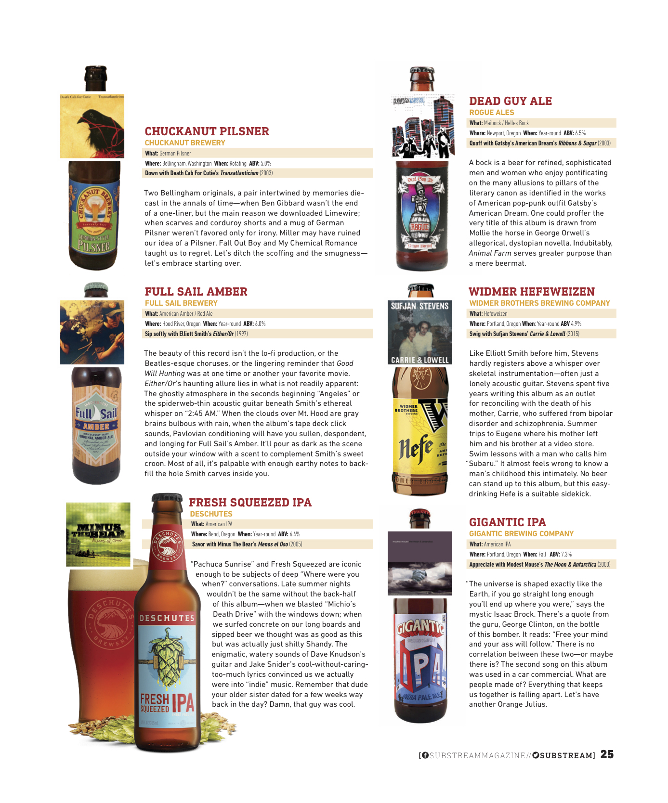
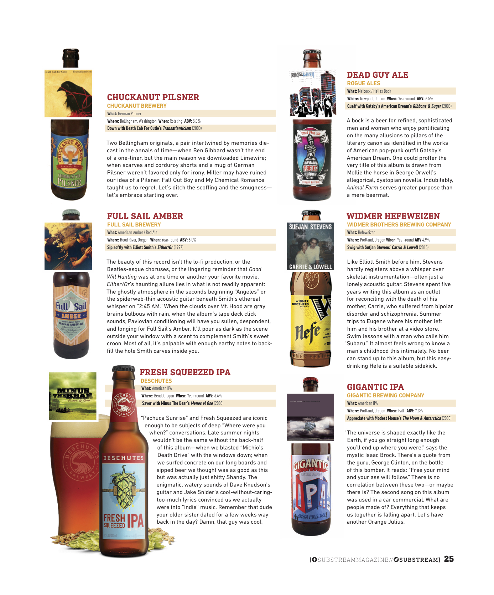

- SUBSTREAM MAGAZINE
Issue 54: Vinyl on Tap: Pairing Pacific Northwest Bands with Regional Craft Brews, Oct, 2016
.jpg) 

BEER
- SUBSTREAMMAGAZINE Issue 56: Vinyl on Tap: Pairing Northern California Bands with Regional Craft Brews, Jan, 2017
- THE TANGENTIALTen Beers That Are Totally Worth the Hype, Jan, 7, 2017
- SUBSTREAM MAGAZINE Issue 54: Vinyl on Tap: Pairing Pacific Northwest Bands with Regional Craft Brews, Oct, 2016
- SUBSTREAM MAGAZINE Issue 53: Vinyl on Tap: Pairing Midwest Brews with Midwest Tunes, Aug, 2016
MUSIC
- SUBSTREAMMAGAZINE Issue 56: Vinyl on Tap: Pairing Northern California Bands with Regional Craft Brews, Jan, 2017
- SUBSTREAM MAGAZINE Issue 54: Vinyl on Tap: Pairing Pacife Northwest Bands with Regional Craft Brews, Oct, 2016
- SUBSTREAM MAGAZINE Issue 53: Vinyl on Tap: Pairing Midwest Brews with Midwest Tunes, Aug, 2016
- IT'S ALL DEADThe Music in Our Minds: An Interview with Polyenso, Mar 29, 2016
- UNDER THE GUN REVIEW Polyenso Discuss Their Local Scene and Musical Metamorphosis, Feb 23, 2016
- IT'S ALL DEAD Most Anticipated of 2016: #8 Daughter Reappear, Jan 13, 2016
- IT'S ALL DEADMost Anticipated of 2016: #10 Polyenso Break the Mold, Jan 11, 2016
- IT'S ALL DEAD Review: Strawberry Girls, American Graffiti, Dec 9, 2015
- IT'S ALL DEADEaux Claires Festival a Celebration of Art, Nature and Friendship, Jul 23, 2015
BOOKS
- THE RUMPUS The Rumpus Interview with Rion Amilcar Scott,Jan,16,2017
- CHICAGO REVIEW OF BOOKSStephenie Meyer’s ‘The Chemist’ Suffers an Identity Crisis but is Movie-Ready, Jan, 6, 2017
- CHICAGO REVIEW OF BOOKSReview: Colin Dickey Explores America’s Haunted History in ‘Ghostland’, Oct, 31, 2016
- CHICAGO REVIEW OF BOOKSReview: Lionel Shriver’s 'Mandible' Creates Discord for the Wrong Reasons, Sept, 16, 2016
- REVIEWING THE EVIDENCEReview: Listen to Meby Hannah Pittard, Aug, 2016
- THE RUMPUS The Rumpus Interview with Keith Lee Morris, Mar 28, 2016
- THE UNDERGROUND Music Review: Strawberry Girls’ French Ghetto, May 8, 2013
HEALTH
- CHICAGO HEALTH MAGAZINEKnee Needs: ACL and MCL injuries common in athletes, Aug, 2016
- CHICAGO HEALTH MAGAZINEHold Your (Charley) Horses, Aug, 2016
- CHICAGO HEALTH MAGAZINEWhy Do Women Sleep Worse Than Men, Dec 2, 2015
- PSYCH CENTRAL Succeeding in College When You Have ADHD, Oct 1, 2015
- PSYCH CENTRALADHD Could Lead to Obesity, Mar 20, 2015
- BETTER MENTAL HEALTH MAGAZINE Veterans Losing PTSD Battle, but Psychedelic Reinforcements Coming, Feb 1, 2015
- PSYCH CENTRALImproving Your Child's ADHD with Exercise, Jan 25, 2015
- MIDWEST REAL Toke Up and Focus?, Aug 15, 2014